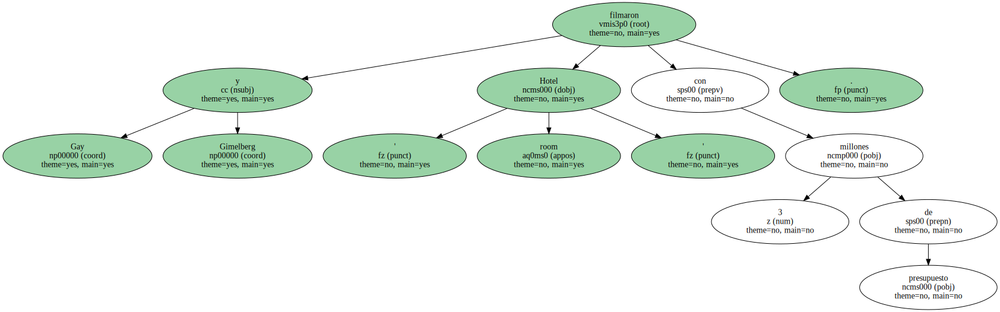
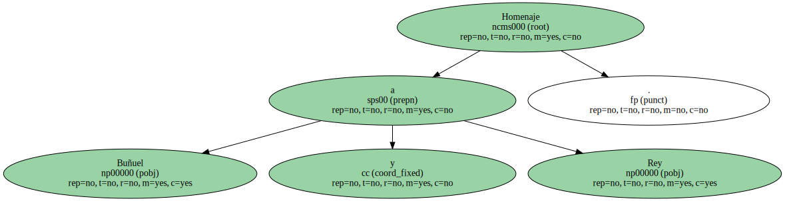
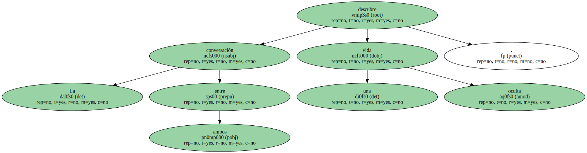
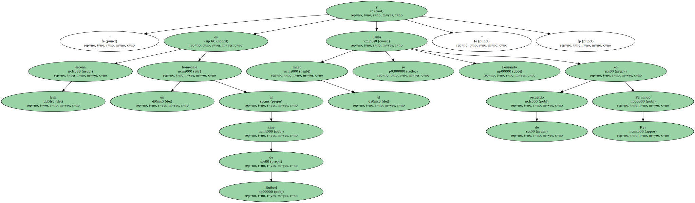
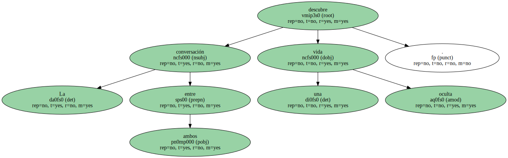
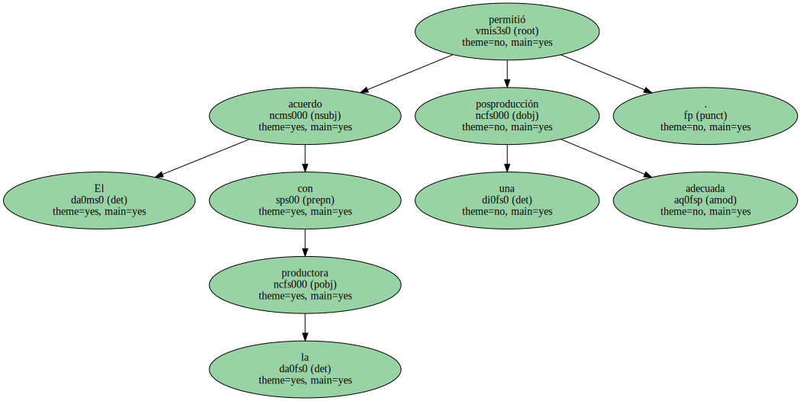

Gay y Gimelberg filmaron ' Hotel room ' con 3 millones de presupuesto.
El argentino Daniel Gimelberg y el catalán Cesc Gay , quienes ayer presentaron en Barcelona su primera película , Hotel room , que se estrena el viernes , reconocieron que esta cinta que han escrito y dirigido al alimón es " una proeza ".
Rodada en Nueva York y en inglés con actores norteamericanos y un catalán , la película se filmó en dos etapas con un presupuesto de tres millones de pesetas.
El resultado es un filme en blanco y negro con el sello del cine independiente que apuesta por el riesgo.

Exhibida con buena acogida en la sección Zabaltegui del Festival de Cine de San Sebastián , Hotel room narra en clave de tragicomedia con tintes negros las historias de varios personajes que ocupan a distintas horas del día la habitación de un hotel en el Harlem hispano.
La película se gestó a partir de la amistad que entablaron Gimelberg , que es arquitecto , y Gay , que ha estudiado cinematografía , cuando coincidieron en Nueva York trabajando como carpinteros en el cinematográfico barrio de Tribeca.
Los actores fueron seleccionados " entre los muchos que hay en Nueva York y que trabajan como camareros , en un videoclub o en cualquier oficio ".
Homenaje a Buñuel y Rey.
Entre los intérpretes destaca Xavier Domingo , un médico de Tarragona que abandonó hace años su carrera para dedicarse a la vida bohemia y que en la película interpreta a un viejo mago que tiene un encuentro con una prostituta.
La conversación entre ambos descubre una vida oculta.
" Esta escena es un homenaje al cine de Buñuel y el mago se llama Fernando en recuerdo de Fernando Rey ".
El escenario se centró en una única habitación que era , convenientemente camuflado , el comedor del apartamento que Gimelberg compartía con otras personas en Harlem.
Los actores , que logran hacer creíbles sus personajes , recibieron instrucciones muy precisas : había que hacer muy bien la primera toma " porque no había dinero para hacer una segunda " , según los realizadores.
Con la película casi terminada , los directores contactaron con varias productoras que rechazaron el producto hasta que Mireia Ros y Marta Figueras , de Bailando con todos , decidieron acabar la producción.
El acuerdo con la productora permitió una posproducción adecuada.
Se cuidó mucho la banda sonora , de Joan Díaz y Jordi Prats , y se pudo hinchar hasta 35 mm la cinta rodada en 16 mm.
Gran Bretaña , Alemania y Suiza tienen interés por el filme , que se exhibirá en los festivales de La Habana y Oporto.